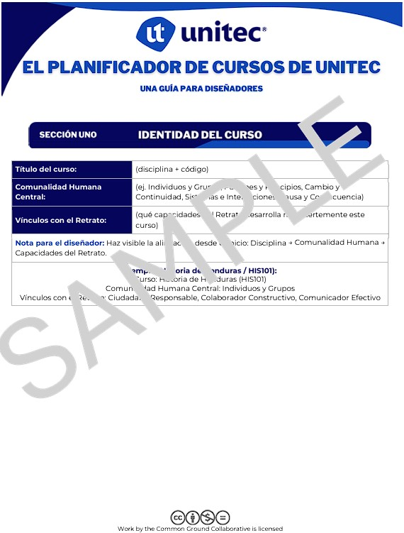

Objetivo del Módulo
Familiarizar a los participantes con la estructura del Unitec Planner y su propósito principal dentro del Ecosistema de Aprendizaje.

Brief: Construyendo la Brújula
Antes de explorar la estructura detallada, visualiza este breve video introductorio que contextualiza el papel del Unitec Planner como nuestra herramienta principal de navegación educativa.
Propósito del Planner
Si la educación superior es un viaje a un destino:
- El Retrato es la meta.
- El Sílabo es el mapa.
- El Planner es la brújula.
Sirve para orientar la experiencia educativa hacia los conceptos, competencias y carácter (Las 3Cs) que queremos formar. Es un documento para el docente, que puede utilizar como herramienta de transparencia con los estudiantes.
¿Quién lo define?
Puede definirse por los docentes que imparten las clases, o por el jefe académico. Se puede homologar, pero es vital reconocer que tenemos contextos, modalidades y recursos diferentes en cada campus y sede.
El jefe académico debe tener acceso al planner para asegurar que en el "Big Picture" del plan académico, se esté desarrollando el retrato que buscamos.
El Co-diseño: ¿Cómo se define?
Como nuestro objetivo es desarrollar un ecosistema y salirnos de los silos académicos, lo mejor es construir acompañados y no de manera aislada. A esto lo llamamos Co-Diseñar, o tener autoría compartida entre líderes, docentes y estudiantes.
Deconstrucción y Construcción: Deconstruimos normas y prácticas tradicionales para luego construir juntos un nuevo marco de referencia.
No es Imposición: Se aleja de crear teorías en una oficina para imponerlas en la práctica.
Es Síntesis: Toma en cuenta las experiencias personales, siendo una parte muy importante de la cultura que buscamos cultivar.
Núcleo del Co-Diseño
"Construir acompañados para fortalecer el ecosistema educativo institucional."
¿Cuáles son las partes del Planner?
- 1 Identidad del curso
- 2 La pregunta atractiva
- 3 La Gran Idea
- 4 El Porqué
- 5 El Qué
- 6 Las Preguntas Marco
- 7 La Evidencia
- 8 El Cómo
- 9 Reflexión y Transferencia
Recursos para la Sesión
Utiliza los siguientes documentos para comenzar a construir el Planner de manera colaborativa. Estos formatos reflejan la estructura de diseño del Ecosistema de Aprendizaje.